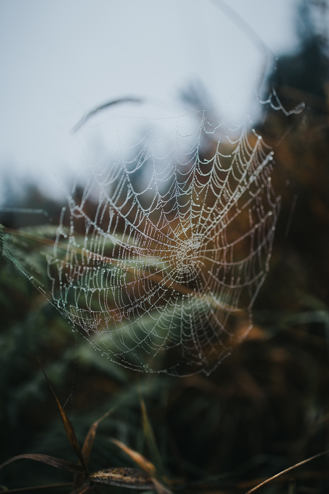

Why are Spiders so Important?
These pests play an important role in our ecosystem as predators to other insects. Determining the importance of spiders depends on who you ask. A gardener or farmer is likely to recognize how helpful they are at preventing pests from destroying crops. A doctor, scientist, or engineer may appreciate the innovative possibilities related to the study of spiders. However, the average homeowner would likely argue that spiders don’t belong anywhere near them because they are gross, creepy, and scary! Being scared of them is a normal response, and there are a few types of dangerous spiders, including the black widows and brown recluses. However, most species generally prefer to avoid contact with people. Even in instances of spider bites, healthy adults can usually survive without serious consequences.
There are many benefits of spiders. First and foremost, spiders eat insects. They are important predators. Maybe you’ve noticed a web by the light outside your front door – consider all the annoying moths, flies, and mosquitoes that have been prevented from entering your home because of a helpful arachnid! Though some spiders may make their way into your home, they will eat other insects that may be inside as well.